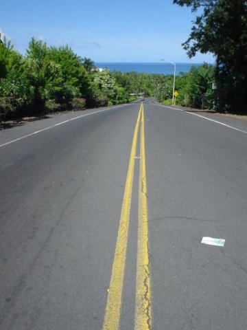

I see trees of green, red roses too
I see them bloom for me and you
And I think to myself, “What a wonderful world.”
I see skies of blue and clouds of white
The bright blessed day, the dark sacred night
And I think to myself, “What a wonderful world.”
The colours of the rainbow, so pretty in the sky
Are also on the faces of people going by
I see friends shaking hands, saying “How do you do?”
They're really saying “I love you.”
I hear babies crying, I watch them grow
They'll learn much more than I'll ever know
And I think to myself, “What a wonderful world.”
Yes, I think to myself, “What a wonderful world.”
(George Weiss / Bob Thiele)
Special Thanks To
Makoto Tsujimoto
Kazuyasu Iwasa
Tohko
gvc
Devote To
Kiyo and Masamichi
Thank you.
facebook.com/motohasi
motohasi _at_ gmail.com
Copyright (c) 2005 Masanari Motohashi